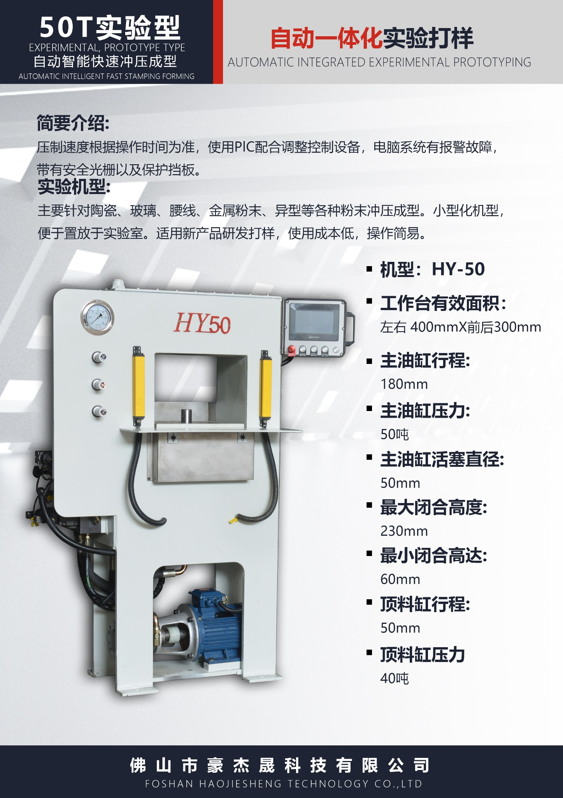
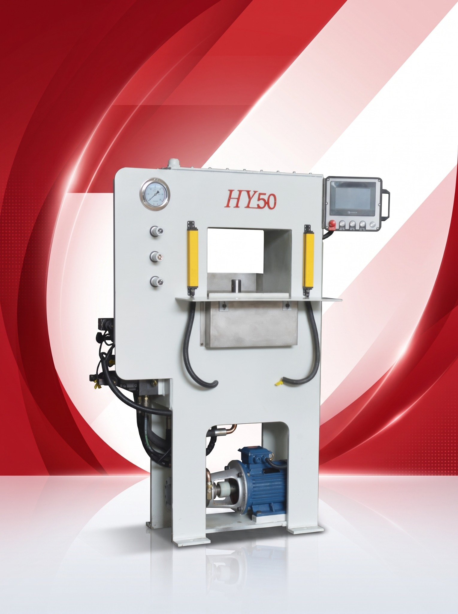

Experimental Type
A practical starting point for testing materials, molds and forming processes.
An experimental hydraulic press for laboratory testing, product development, prototype making and forming-process verification.
Ask About This Model →← Back to Product SeriesFor laboratory testing, product development, prototype making and forming-process verification.

A practical starting point for testing materials, molds and forming processes.

Evaluate forming results before moving to production equipment.

Discuss your product and test requirements with our team.